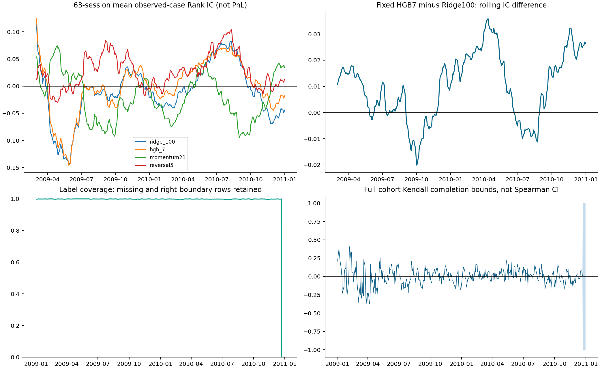

2009–2010 walk-forward development · 2011 reserved · No portfolio PnL
Fixed primary comparison
HGB7 − Ridge100 daily IC: 0.01067,
95% calendar-block interval [0.00238, 0.01833].
This compares fixed specifications, not the best-performing candidate from each family.
Model/control
Mean IC
95% block interval
2009 IC
2010 IC
ridge_10
-0.00906
[-0.04249, 0.02399]
-0.02275
0.00498
ridge_100
-0.00902
[-0.04250, 0.02410]
-0.02272
0.00502
hgb_7
0.00165
[-0.03179, 0.03315]
-0.01844
0.02222
hgb_15
0.00051
[-0.03113, 0.03143]
-0.01921
0.02070
null_hgb_191
0.00708
[-0.00565, 0.02115]
0.02568
-0.01196
null_hgb_727
-0.00707
[-0.01519, 0.00158]
-0.00750
-0.00662
null_hgb_2027
-0.00183
[-0.01263, 0.00738]
-0.00263
-0.00102
momentum21
-0.01863
[-0.04888, 0.01429]
-0.01786
-0.01942
reversal5
0.02729
[0.00790, 0.04877]
0.02284
0.03184
composite_mom63_rev5
0.00928
[-0.01220, 0.03098]
-0.00842
0.02741
Development-ranked candidate: hgb_7.
This selection is not independent confirmation and does not release 2011.

Remaining data and inference limitations
Historical common-stock/security-type and exchange membership are not qualified; snapshot classifications are not eligibility inputs
Vendor adjustment ratios define a price-return proxy, not fully qualified cash-distribution total return
Missing terminal payouts and merger consideration remain unresolved; missing labels are not assumed zero
Source revision/publication timestamps are not qualified
The 2011 data received coverage auditing but no prediction-performance evaluation; it is not described as never accessed
12 fixed features; four candidates; three training-label permutation controls; 14 fits.
Raw data, row-level forecasts and fitted models remain inside the local research platform.